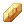

Refinement System

|
| Portuguese |
You can refine equipment in Ragnarok Online to make them more powerful. Each successful refine on a weapon/armor will add a '+1' to its name, up to a maximum of +20. Middle/Lower Headgears and Accessories cannot be refined.
For refining Shadow Gear, refer to Shadow Gear Refinement.
The refine bonus, materials required, success chance and consequence of failure all vary depending on the weapon's/armor's level, current refinement and choice of refine materials. The specifics are detailed on this page.
Required materials
The materials will change depending on the weapon/armor's current refine level and in case of a weapon, its level.
Equipment below +10
- Weapon Lv1 -
 Phracon
Phracon - Weapon Lv2 -
 Emveretarcon
Emveretarcon - Weapon Lv3 and Lv4 -
 Oridecon /
Oridecon /  Enriched Oridecon
Enriched Oridecon - Weapon Lv5 - Etherdeocon / Enriched Etherdeocon
- Armor Lv 1 -
 Elunium/
Elunium/ Enriched Elunium
Enriched Elunium - Armor Lv 2 - Etherium/ Enriched Etherium
Equipment above +10
- Weapons Lv 1-4 -
 Bradium /
Bradium / HD Bradium
HD Bradium - Weapons Lv 5 - Etel Bradium / HD Etel Bradium
- Armor Lv 1 - Carnium /
 HD Carnium
HD Carnium - Armor Lv 2- Etel Carnium / HD Etel Carnium
Optional
Different ore effects
As mentioned before, different types of ores may have different types of rules, the ones available in the server are listed below.
Level 1-4 Weapons and Level 1 Equipment
 HD Bradium/ HD Carnium - HD standing for High Density. Instead of losing 3 refines on failure, it will instead lose 1. There is no longer any chance of the equipment breaking.
HD Bradium/ HD Carnium - HD standing for High Density. Instead of losing 3 refines on failure, it will instead lose 1. There is no longer any chance of the equipment breaking.
Enriched Elunium/ Enriched Oridecon - Offers a higher percentage of success chance on refining.
 Blacksmith's Blessing - Prevents the equipment from breaking or losing refinement level in case of refinement failure.
Blacksmith's Blessing - Prevents the equipment from breaking or losing refinement level in case of refinement failure.
Level 5 Weapons and Level 2 Equipment
HD Etel Bradium/ HD Etel Carnium - High Density ores for Level 5 Weapons and Level 2 Equipment. Offers a higher percentage of success chance on refining.
Enriched Etherium/ Enriched Etherdeocon - Enriched ores for Level 5 Weapons and Level 2 Equipment. Offers a higher percentage of success chance on refining and only lose -1 refine on a failed attempt.
Blessed Etel Dust - Can be used to increase success chance of a grading attempt.
Acquiring the Ores
Level 1-4 Weapons and Level 1 Equipment
 Phracon -200z from NPC, drops from monsters
Phracon -200z from NPC, drops from monsters Emveretarcon - 1,000z from NPC, drops from monsters
Emveretarcon - 1,000z from NPC, drops from monsters Rough Oridecon - Drops from monsters
Rough Oridecon - Drops from monsters Rough Elunium - Drops from monsters
Rough Elunium - Drops from monsters- Oridecon - Convert 5 Rough Oridecon into 1 Oridecon, but also drops from monsters
- Elunium - Convert 5 Rough Elunium into 1 Elunium, but also drops from monsters
- Enriched Oridecon - in the Nova Shop
- Enriched Elunium - in the Nova Shop
- Carnium - 3 Elunium + 50,000 Zeny but also drops from monsters
- Bradium - 3 Oridecon + 50,000 Zeny but also drops from monsters
- HD Carnium - in the Nova Shop
- HD Bradium - in the Nova Shop
- Blacksmith's Blessing - Weekly Quests
Level 5 Weapons and Level 2 Equipment
- Note: new ore convertions can be done by talking to Gilbert
- Etherdeocon - Convert 1 Oridecon and 1
 Etel Dust into 1 Etherdeocon
Etel Dust into 1 Etherdeocon - Etherium - Convert 1 Elunium and 1 Etel Dust into 1 Etherdeocon
- Enriched Etherdeocon - Convert 1 Enriched Oridecon and 2 Etel Dust into 3 Enriched Etherdeocon
- Enriched Etherium - Convert 1 Enriched Elunium and 2 Etel Dust into 3 Enriched Etherium
- Etel Carnium - Convert 1 Carnium and 3 Etel Dust into 1 Etel Carnium
- Etel Bradium - Convert 1 Bradium and 3 Etel Dust into 1 Etel Bradium
- HD Etel Carnium - Convert 1 HD Carnium and 3 Etel Dust into 1 Etel Carnium
- HD Etel Bradium - Convert 1 HD Bradium and 3 Etel Dust into 1 Etel Bradium
- Blessed Etel Dust - Convert 1 Blacksmith's Blessing and 5 Etel Dust into 1 Blessed Etel Dust
Methods of refining
There are several ways to refine:
- NPC Refining - NPCs charge a zeny fee for every refine. You can find these NPCs by looking for the Anvil icon on your minimap.
- Refinement Window - Allows for the usage of Blacksmith's Blessing. You can open the Refinement Window by talking to the same Refinement NPCs.
- Whitesmith's
 Weapon Refine - This is a skill from the Whitesmith class. It adds an extra +0.5% to the refine chance for every job level past 50. At Job 70 this results in a bonus of 10%.
Weapon Refine - This is a skill from the Whitesmith class. It adds an extra +0.5% to the refine chance for every job level past 50. At Job 70 this results in a bonus of 10%.
- Can only be used for weapons +9 and below. Please note, however, that if the Whitesmith's job level is below 50, there is a chance of breaking the weapon even before the safe refine number.
- In NovaRO, Mechanics of any Job level keep the full +10% refining bonus (regardless of your Whitesmith's job level).
- Whitesmith/Mechanic stats don't affect Weapon Refine. 100 or 0 LUK is the same.
Refine effects
An upgraded weapon get the following bonus to ATK and MATK (for conciseness, only ATK is written) :
- Weapons
- Weapon Lv. 1 - Every +1 upgrade gives 2 ATK, 0~3 ATK for every Over Upgrade pass the +7 safety limit, and 3 ATK for every High Upgrade pass +15.
- Weapon Lv. 2 - Every +1 upgrade gives 3 ATK, 0~5 ATK for every Over Upgrade pass the +6 safety limit, and 6 ATK for every High Upgrade pass +15.
- Weapon Lv. 3 - Every +1 upgrade gives 5 ATK, 0~8 ATK for every Over Upgrade pass the +5 safety limit, and 9 ATK for every High Upgrade pass +15.
- Weapon Lv. 4 - Every +1 upgrade gives 7 ATK, 0~14 ATK for every Over Upgrade pass the +4 safety limit, and 12 ATK for every High Upgrade pass +15.
- Weapon Lv. 5 (No Grade) - Every +1 upgrade gives 8 ATK and 2 P.ATK.
- Weapon Lv. 5 (Grade D) - Every +1 upgrade gives 8.8 ATK and 2 P.ATK.
- Weapon Lv. 5 (Grade C) - Every +1 upgrade gives 10.4 ATK and 2 P.ATK.
- Weapon Lv. 5 (Grade B) - Every +1 upgrade gives 12 ATK and 2 P.ATK.
- Weapon Lv. 5 (Grade A) - Every +1 upgrade gives 16 ATK and 2 P.ATK.
- A +20 level 4 weapon gives 201~424 extra ATK and MATK.
- A +20 level 5 Grade A weapon gives 320 ATK and 40 P.ATK.
Notes:
- The Over Upgrade ATK and MATK is random for every hit and gives a minimum of 1. This bonus is not shown on the status window or affected by the Max ATK from Crit and Maximize Power or the Max MATK from Recognized Spell.
- All upgrade bonuses are cumulative so refining a level 4 weapon from +15 to +16 increases your bonus ATK and MATK from 106~259 to 125~292 (7 for the upgrade, 0~14 for the Over Upgrade and 12 for the High Upgrade).
- Armors
- Every upgrade gives floor[( 3 + current upgrade ) / 4] Equipment DEF. For Lv 2 Equipment, this Hard DEF bonus is increased by 120% while also granting 2 RES and MRES per refine.
- Every +1 upgrade at +1 ~ +4 gives +1 Equipment DEF
- Every +1 upgrade at +5 ~ +8 gives +2 Equipment DEF
- Every +1 upgrade at +9 ~ +12 gives +3 Equipment DEF
- Every +1 upgrade at +13 ~ +16 gives +4 Equipment DEF
- Every +1 upgrade at +17 ~ +20 gives +5 Equipment DEF
- Example : a +10 buckler will give 40 + 1+1+1+1 + 2+2+2+2 + 3+3 = 58 DEF.
Upgrades are useful, as for weapon upgrade, it increases your damage. For armors, it reduces damage you take.
Refining probabilities Level 1-4 Weapons and Level 1 Equipment
The refining chance depends on what method of refining you're using, the type of ore and the weapon level (Armor = Lv4 Weapon up to +9)
These tables start from +4 because up to that point, all sorts of weapons and armors refine at a 100% chance.
Normal Oridecon and Elunium
| Upgrade | Lv. 1 | Lv. 2 | Lv. 3 | Lv. 4 | Armor |
| +4 -> +5 | 100% | 100% | 100% | 60% | 60% |
| +5 -> +6 | 100% | 100% | 60% | 40% | 40% |
| +6 -> +7 | 100% | 60% | 50% | 40% | 40% |
| +7 -> +8 | 60% | 40% | 20% | 20% | 20% |
| +8 -> +9 | 40% | 20% | 20% | 20% | 20% |
| +9 -> +10 | 19% | 19% | 19% | 9% | 9% |
| Upgrade | Lv. 1 | Lv. 2 | Lv. 3 | Lv. 4 | Armor |
| +0 -> +5 | 100% | 100% | 100% | 60% | 60% |
| +0 -> +6 | 100% | 100% | 60% | 24% | 24% |
| +0 -> +7 | 100% | 60% | 30% | 9.6% | 9.6% |
| +0 -> +8 | 60% | 24% | 6% | 1.92% | 1.92% |
| +0 -> +9 | 24% | 4.8% | 1.2% | 0.384% | 0.384% |
| +0 -> +10 | 4.56% | 0.91% | 0.23% | 0.035% | 0.035% |
Mechanic or Job Lv70 Whitesmith
| Upgrade | Lv. 1 | Lv. 2 | Lv. 3 | Lv. 4 |
| +4 -> +5 | 100% | 100% | 100% | 70% |
| +5 -> +6 | 100% | 100% | 70% | 50% |
| +6 -> +7 | 100% | 70% | 60% | 50% |
| +7 -> +8 | 70% | 50% | 30% | 30% |
| +8 -> +9 | 50% | 30% | 30% | 30% |
| +9 -> +10 | 29% | 29% | 29% | 19% |
| Upgrade | Lv. 1 | Lv. 2 | Lv. 3 | Lv. 4 |
| +0 -> +5 | 100% | 100% | 100% | 70% |
| +0 -> +6 | 100% | 100% | 70% | 35% |
| +0 -> +7 | 100% | 70% | 42% | 17.5% |
| +0 -> +8 | 70% | 35% | 12.6% | 5.25% |
| +0 -> +9 | 35% | 10.5% | 3.78% | 1.575% |
| +0 -> +10 | 10.15% | 3.045% | 1.096% | 0.299% |
Enriched Oridecon and Elunium
| Upgrade | Lv. 1 | Lv. 2 | Lv. 3 | Lv. 4 | Armor |
| +4 -> +5 | 100% | 100% | 100% | 90% | 90% |
| +5 -> +6 | 100% | 100% | 90% | 70% | 70% |
| +6 -> +7 | 100% | 90% | 80% | 70% | 70% |
| +7 -> +8 | 90% | 70% | 40% | 40% | 40% |
| +8 -> +9 | 70% | 40% | 40% | 40% | 40% |
| +9 -> +10 | 30% | 30% | 30% | 20% | 20% |
| Upgrade | Lv. 1 | Lv. 2 | Lv. 3 | Lv. 4 | Armor |
| +0 -> +5 | 100% | 100% | 100% | 90% | 90% |
| +0 -> +6 | 100% | 100% | 90% | 63% | 63% |
| +0 -> +7 | 100% | 90% | 72% | 44,1% | 44,1% |
| +0 -> +8 | 90% | 63% | 28.8% | 17.64% | 17.64% |
| +0 -> +9 | 63% | 25.2% | 11.52% | 7.06% | 7.06% |
| +0 -> +10 | 19.9% | 7.56% | 3.46% | 1.41% | 1.41% |
Note that:
- Red colored numbers mean no improvement over normal Oridecon or Elunium.
Carnium, Bradium and their HD versions
| Upgrade | Lv. 1 | Lv. 2 | Lv. 3 | Lv. 4 | Armor |
| +10 -> +11[1] | 90% | 85% | 80% | 80% | 8% |
| +11 -> +12[2] | 50% | 50% | 50% | 50% | 8% |
| +12 -> +13 | 50% | 50% | 30% | 30% | 8% |
| +13 -> +14 | 40% | 30% | 30% | 30% | 8% |
| +14 -> +15 | 30% | 30% | 30% | 20% | 7% |
| +15 -> +16 | 30% | 30% | 20% | 20% | 7% |
| +16 -> +17 | 30% | 20% | 20% | 15% | 7% |
| +17 -> +18 | 20% | 20% | 15% | 15% | 7% |
| +18 -> +19 | 20% | 15% | 10% | 10% | 5% |
| +19 -> +20 | 15% | 10% | 5% | 5% | 5% |
- ↑ Refining a +10 weapon/armor with HD Bradium/Carnium will not destroy the item or decrease its refine level upon failure. Instead, the item has a 10% chance to become Damaged upon failure, but is otherwise unharmed. If non-HD Bradium/Carnium is used, the item will be Destroyed instead of Damaged.
- ↑ Refining a +11 or above weapon/armor with HD Bradium/Carnium will not destroy or damage the item upon failure. However, the item's refine level will decrease by one. If non-HD Bradium/Carnium is used, the item will instead have its refine level decreased by three (possibly to below +10), with a small chance to be completely Destroyed.
Refining probabilities Level 5 Weapons and Level 2 Equipment
These tables start from +3 because up to that point, all sorts of weapons and armors refine at a 100% chance.
Etherdeocon and Etherium
These normal ores on failed attempts will not destroy the item, but will reduce the item's refine level by 3.
| Upgrade | Lv. 5 Weapon | Lv. 2 Equipment |
| +3 -> +4 | 60% | 60% |
| +4 -> +5 | 60% | 60% |
| +5 -> +6 | 40% | 40% |
| +6 -> +7 | 40% | 40% |
| +7 -> +8 | 20% | 20% |
| +8 -> +9 | 20% | 20% |
| +9 -> +10 | 9% | 9% |
Enriched Etherdeocon and Enriched Etherium
These Enriched ores on failed attempts will not destroy the item, but will reduce the item's refine level by 1.
| Upgrade | Lv. 5 Weapon | Lv. 2 Equipment |
| +3 -> +4 | 90% | 90% |
| +4 -> +5 | 70% | 70% |
| +5 -> +6 | 60% | 60% |
| +6 -> +7 | 60% | 60% |
| +7 -> +8 | 40% | 40% |
| +8 -> +9 | 40% | 40% |
| +9 -> +10 | 20% | 20% |
Etel Bradium and Etel Carnium
These normal ores on failed attempts will destroy the item, using Blacksmith's Blessing is highly recommended.
| Upgrade | Lv. 5 Weapon | Lv. 2 Equipment |
| +10 -> +11 | 12% | 12% |
| +11 -> +12 | 12% | 12% |
| +12 -> +13 | 12% | 12% |
| +13 -> +14 | 12% | 12% |
| +14 -> +15 | 10% | 10% |
| +15 -> +16 | 10% | 10% |
| +16 -> +17 | 10% | 10% |
| +17 -> +18 | 10% | 10% |
| +18 -> +19 | 7% | 7% |
| +19 -> +20 | 7% | 7% |
HD Etel Bradium and HD Etel Carnium
These High Density ores on failed attempts will destroy the item, using Blacksmith's Blessing is highly recommended.
| Upgrade | Lv. 5 Weapon | Lv. 2 Equipment |
| +10 -> +11 | 20% | 20% |
| +11 -> +12 | 20% | 20% |
| +12 -> +13 | 20% | 20% |
| +13 -> +14 | 20% | 20% |
| +14 -> +15 | 15% | 15% |
| +15 -> +16 | 15% | 15% |
| +16 -> +17 | 15% | 15% |
| +17 -> +18 | 15% | 15% |
| +18 -> +19 | 10% | 10% |
| +19 -> +20 | 10% | 10% |
Blacksmith's Blessings Refine Requirements
These are the requirements for safe refining using Blacksmith's Blessing.
| Current Refine Level | Number Required |
| +4 ~ +8 (Level 4 Weapons and Level 1 Armors) | 1 |
| +3 ~ +8 (Level 5 Weapons and Level 2 Armors) | |
| +8 | 2 |
| +9 | 4 |
| +10 | 7 |
| +11 | 11 |
| +12 | 16 |
| +13 | 22 |
Grading
Grading is only exclusive for level 5 weapons and level 2 armors. They need to have specific refine level in order to grade. They can be graded at Paradise Market then east portal and talk to Suribell . She both provides Grading gears and materials used for grading. When you fail on standard, it will be damaged, while with safe method, only the materials will disappear and nothing else will happen. Do note however once graded successfully, the refine resets back to +0. It is recommended against using Blessed Etel Dusts for its high price and extremely low return.
No Grade to Grade D
| Standard Materials Required | Safe Method Materials Required | Blessed Etel Dusts Required For Increased Chance | Refinement Required and Chance |
| Etel Aquamarine x1 ( Etel Stone x3/ Etel Dust x15 + Aquamarine x1)
|
Etel Aquamarine x5 ( Etel Stone x15/ Etel Dust x75 + Aquamarine x5)
|
1 per 1% | +9 = 20% +10 = 30% +11 and above = 70% |
Grade D to Grade C
| Standard Materials Required | Safe Method Materials Required | Blessed Etel Dusts Required For Increased Chance | Refinement Required and Chance |
 Etel Topaz x1 Etel Topaz x1 ( Etel Stone x6/ Etel Dust x30 +  Topaz x1)
|
Etel Topaz x5 ( Etel Stone x30/ Etel Dust x150 + Topaz x5)
|
3 per 1% | +10 = 30% +11 and above = 60% |
Grade C to Grade B
| Standard Materials Required | Safe Method Materials Required | Blessed Etel Dusts Required For Increased Chance | Refinement Required and Chance |
| Etel Amethyst x1 ( Etel Stone x10/ Etel Dust x50 + Amethyst x1)
|
Etel Amethyst x5 ( Etel Stone x50/ Etel Dust x250 + Amethyst x5)
|
5 per 1% | +11 and above = 50% |
Grade B to Grade A
| Standard Materials Required | Safe Method Materials Required | Blessed Etel Dusts Required For Increased Chance | Refinement Required and Chance |
| Etel Amber x2 ( Etel Stone x30/ Etel Dust x150 + Amber x2)
|
Etel Amber x10 ( Etel Stone x150/ Etel Dust x750 + Amber x10)
|
7 per 1% | +11 and above = 40% |
Damaged Equipment
When failing refinement for +10 armors and weapons with HD Carnium or HD Bradium on level 1 - 4 weapons or level 1 armors, there is a chance for it to become Damaged. For level 5 weapons and level 2 armors, it would only happen if you fail on grading via standard method.
Damaged equipment has the following properties:
The costs to repair a damaged item are as follows:
Oridecon and 5  Gold Coins
Oridecosn and 10 Gold Coins
Oridecons and 50 Gold Coins
Oridecons and 75 Gold Coins
Eluniums and 10 Gold Coins
Etel Dust + 7 Aquamarine)
Etel Topaz (42 Etel Stone/210 Etel Dust + 7 Topaz)
Etel Dust + 7 Amethyst)
Etel Ambers (210 Etel Stone/1050 Etel Dust + 14 Amber)
Gold Coins
Oridecosn and 10 Gold Coins
Oridecons and 50 Gold Coins
Oridecons and 75 Gold Coins
Eluniums and 10 Gold Coins
Etel Dust + 7 Aquamarine)
Etel Topaz (42 Etel Stone/210 Etel Dust + 7 Topaz)
Etel Dust + 7 Amethyst)
Etel Ambers (210 Etel Stone/1050 Etel Dust + 14 Amber)If a player does not wish to pay the repair fee, they can opt to downgrade the refinement level to +9. This only works for level 1 - 4 weapons and level 1 armors. Note that Damaged status can only be applied to +10 equipment when refined with HD Bradium or HD Carnium.
Extra
Yorutia's adaptive refinement cost calculator (v2.0: Included Lv2 Armor / Lv5 Weapon)